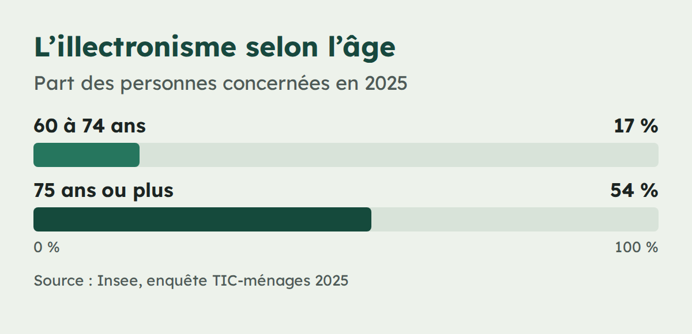

Pourquoi un jeu simple peut-il être difficile à trouver ?
On peut très bien connaître la belote et hésiter devant une page qui présente plusieurs boutons « Jouer ». Entre les résultats de recherche, les annonces et les invitations à installer une application, le lien vers la partie est parfois le plus difficile à repérer. Si vous partagez un jeu, envoyez l’adresse du jeu lui-même plutôt qu’une recherche à refaire.
Dans son enquête de 2025, l’Insee estime que 17 % des 60 à 74 ans et 54 % des 75 ans ou plus sont en situation d’illectronisme. L’indicateur tient compte de l’usage récent d’Internet et des compétences évaluées. L’enquête porte sur les usages numériques en général. Insee, enquête TIC-ménages 2025, s’ouvre dans un nouvel onglet.

Une fois le jeu ouvert, la difficulté peut être très concrète. Il faut parfois distinguer deux petits symboles ou viser une case étroite avec la souris. Le W3C relève que la baisse de sensibilité au contraste et la difficulté à cliquer sur de petites cibles peuvent gêner certains internautes âgés. De grandes cartes, des boutons bien séparés et une aide que l’on peut rouvrir font alors une différence. W3C, accessibilité du Web pour les personnes âgées, s’ouvre dans un nouvel onglet.
Comment régler le jeu et reprendre sa partie ?
- Facile
- Pour découvrir le jeu à votre rythme.
- Moyen
- Pour jouer quand vous connaissez les règles.
- Difficile
- Pour relever un défi plus exigeant.
Réglez la taille avant de jouer. Sur ordinateur, utilisez Agrandir si les cartes ou les cases vous semblent trop petites. Vérifiez que vous pouvez lire la plus petite inscription utile.
Essayez un seul geste. Au Yams, lancez les dés. Aux mots mêlés, trouvez un mot. Pour apprendre un jeu nouveau, choisissez Facile et ouvrez Règles si vous avez besoin d’un rappel.
Gardez le lien du jeu en favori. Donnez-lui un nom facile à retrouver, par exemple « Mon solitaire ». Vous pourrez revenir directement au jeu sans refaire la recherche.
Si vous interrompez une partie, revenez avec le même navigateur sur le même appareil. Le site y enregistre votre progression. Si une partie est enregistrée, la bibliothèque affiche Reprendre la partie sur la fiche du jeu.
Vous aidez un proche à découvrir les jeux en ligne ?
Demandez d’abord à quel jeu il aimerait jouer. Ouvrez ce jeu sur son appareil habituel. Montrez un geste concret, par exemple où cliquer pour retourner une carte, puis laissez-lui la souris ou la tablette.
Avant de terminer, fermez la page ensemble et demandez-lui de retrouver le jeu avec son favori. S’il hésite, regardez à quel moment il s’arrête. Le nom du favori est peut-être trop vague, ou le bouton d’aide reste difficile à repérer. Corrigez ce point et refaites le trajet avec lui.
Questions fréquentes
Faut-il installer une application pour jouer ?
Les jeux se lancent directement dans le navigateur. Dans la bibliothèque, cliquez sur Jouer sur la fiche de votre choix. Le jeu vous propose ensuite un niveau.
Quel jeu choisir pour jouer seul ?
Essayez le solitaire si vous aimez les cartes, ou les mots mêlés si vous préférez les lettres. Au Yams, à la belote ou au Huit américain, l’ordinateur joue les autres places.
Puis-je apprendre les règles avant de lancer le jeu ?
Oui. Ouvrez le menu Règles pour lire un guide. Vous pouvez aussi consulter les règles dans le jeu et revenir à votre partie quand vous avez fini.
Quel jeu essayer en premier ?
Commencez par ce que vous aimez faire. Si vous aimez les mots, ouvrez une grille. Si vous avez l’habitude de jouer à la belote, retrouvez les règles que vous connaissez. Voici le premier geste dans chacun des six jeux.
-
 Mots mêlés
Mots mêlésPour le plaisir de chercher un mot caché. Choisissez Facile pour chercher des mots qui se lisent vers la droite ou vers le bas. Cliquez sur la première lettre, puis sur la dernière. Si vous bloquez, Où chercher ? montre la première lettre d’un mot.
-
 Solitaire
SolitairePour retrouver une réussite et jouer seul. Essayez de poser un sept rouge sur un huit noir. Si vous n’avez aucun déplacement en tête, cliquez sur la pioche pour retourner une carte. Que jouer maintenant ? indique un coup. Le guide du solitaire explique le rangement des cartes de l’as au roi.
-
 Démineur
DémineurPour résoudre une grille avec des indices. Ouvrez une première case. Sur Jeux de Papi, ce premier clic est sans danger. Au niveau facile, une coche indique une case sûre. Le guide du démineur montre quand poser un drapeau et quand ouvrir une case.
-
 Belote
BelotePour jouer aux cartes à quatre depuis chez soi. L’ordinateur tient les trois autres places, dont celle de votre partenaire. Quand vient votre tour de jouer une carte, choisissez parmi celles que le jeu laisse levées. Le guide de la belote rappelle l’ordre des cartes à l’atout et la façon de compter les points.
-
 Yams
YamsPour lancer cinq dés et viser la bonne combinaison. Lancez les dés, puis cliquez sur ceux que vous souhaitez garder. La feuille de score affiche ce que vous pouvez inscrire dans chaque case libre. Si vous hésitez entre deux cases, consultez les combinaisons et les points du Yams.
-
 Huit américain
Huit américainPour jouer à un jeu de défausse. Posez une carte de la même couleur ou de la même valeur que celle du milieu. Par exemple, vous pouvez poser un sept de carreau sur un sept de trèfle. Un huit permet de choisir la couleur suivante. Le guide du Huit américain rassemble les cartes spéciales.